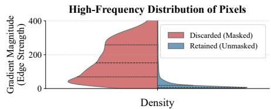

Figureure 2 · : Overall NGPS pipelineFig. 2: Overall NGPS pipeline. A noisy slice triplet is low-pass filtered to produce noise-attenuated guide (“Pseudo-Clean”) slices, whose pairwise diferences yield direction-aware threshold masks with reduced sensitivity to raw noise. For each masked location, NGPS searches a local window in the adjacent slice for the Top-K similar patches (green); the matched coordinates are then used to retrieve and average the corresponding center-pixel values from the original noisy adjacent slice, forming directionaware retrieved targets. Unmasked static pixels use same-coordinate neighboring supervision to compute $\mathcal { L } _ { N 2 N }$ (blue), whereas masked pixels use the retrieved targets to compute L<sub>NGP</sub> <sub>S</sub> (purple). The two reconstruction terms are summed as L<sub>recon</sub>; regional consistency is applied separately to static regions as described in Sec. 3.4.这张图概括 NGPS 的整体方法流程。阅读时先看模块之间传递的训练信号，再看作者如何把目标拆成可优化的子问题。

(c) High-frequency distribution of pixels Fig(c) High-frequency distribution of pixels Fig. 1: Illustration of inter-slice anatomical misalignment and the resulting critical information loss from conventional masking strategies $( \tau = 0 . 1 )$ in 2.5 mm LIDC-IDRI data [2]. (a) The absolute diference map $( | n - ( n + 1 ) | )$ ) and the masked pixels (highlighted in red). (b) The histogram revealing the severity of this spatial information loss within critical Regions of Interest (ROIs) across the validation set. (c) The split violin plot showing that the discarded (masked) pixels are heavily concentrated in the high-frequency spectrum (high gradient magnitude) compared to the retained pixels.这张图来自论文 PDF 的结构化抽取。当前用于辅助理解 NGPS 的方法或实验，请结合正文精读段落一起看。